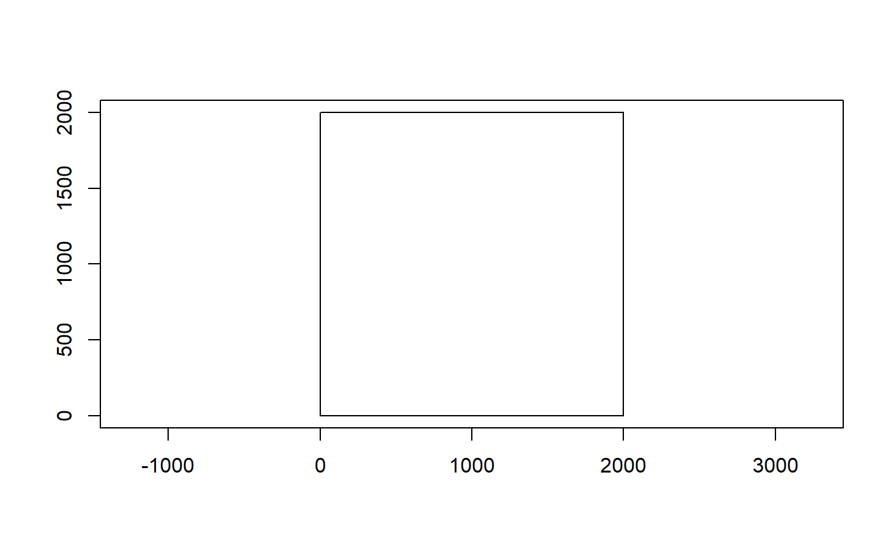
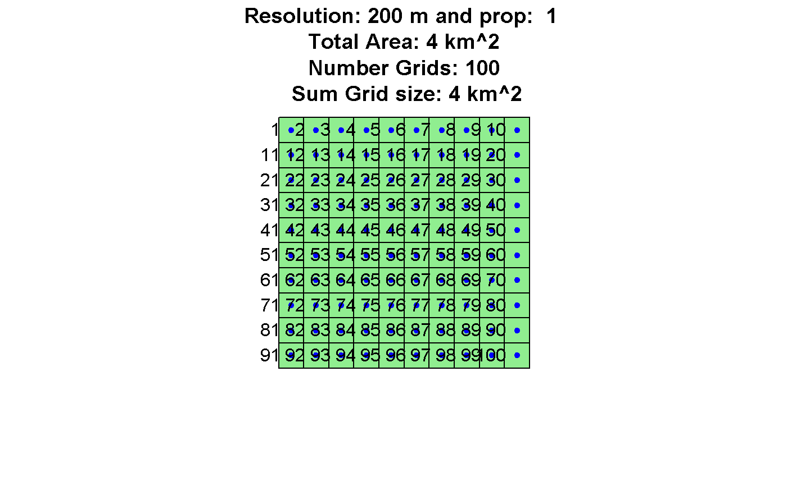
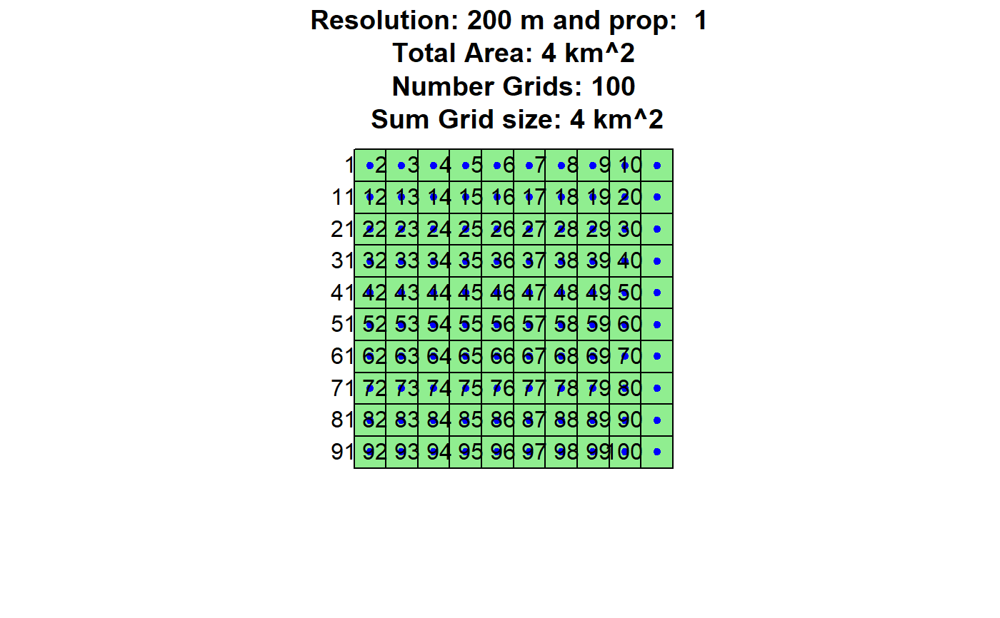
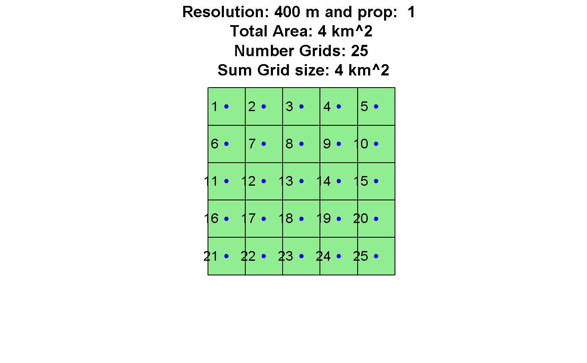
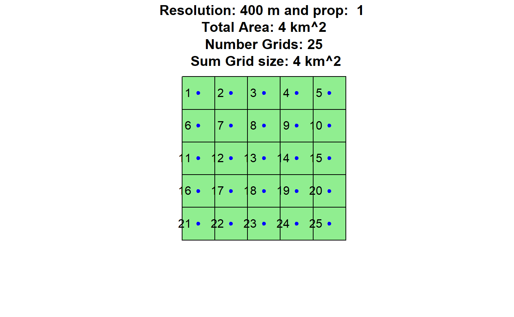
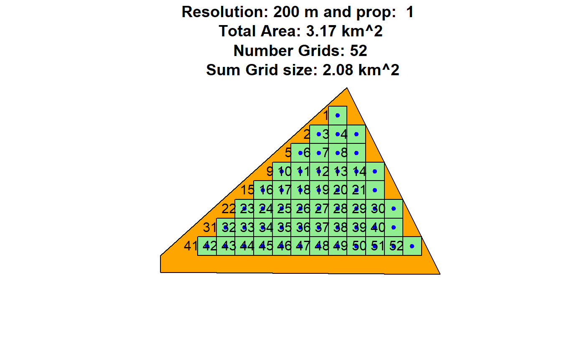
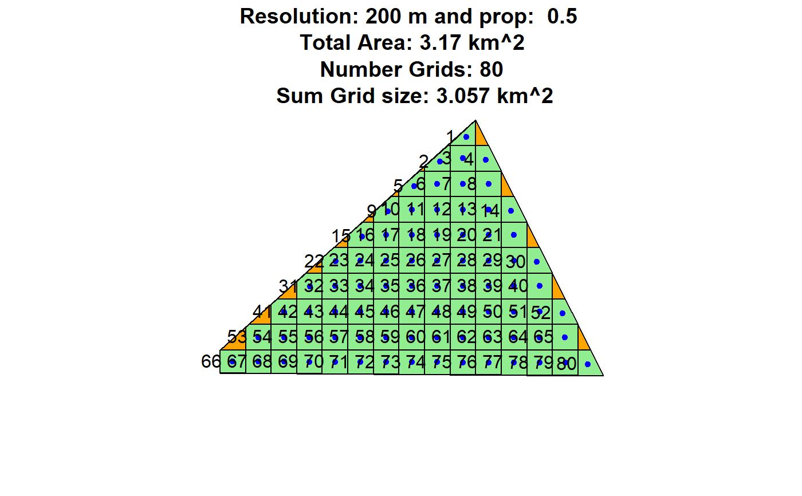
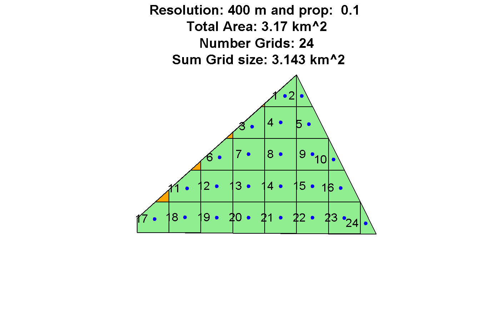

Create a grid from a given polygon and with a certain resolution and proportionality. The center points of each grid cell represent possible locations for wind turbines.
grid_area(shape, resol = 500, prop = 1, plotGrid = FALSE)
Arguments
| shape | Shape file of the considered area |
|---|---|
| resol | The resolution of the grid in meters. Default is 500 |
| prop | A factor used for grid calculation. Determines the percentage a grid has to overlay the considered area to be represented as grid cell. Default is 1. |
| plotGrid | Logical value indicating whether resulting grid should be plotted or not. Default is FALSE. |
Value
Returns a list with 2 elements. List element 1 will have the grid cell IDS, and the X and Y coordinates of the centers of each grid cell. List element 2 is the grid as SpatialPolygons, which is used for plotting purposes.
Note
The grid of the genetic algorithm will have a resolution of Rotor
* fcrR. See the arguments of windfarmGA
References
http://rfunctions.blogspot.co.at/2014/12/gridfilter-intersect-grid-with-shape.html
See also
Other Helper Functions: dup_coords,
getDEM, getISO3,
get_grids, hexa_area,
isSpatial, permutations,
readintegerSel, readinteger,
splitAt, tess2SPdf,
windata_format
Examples
#> #> #> #>## Exemplary input Polygon with 2km x 2km: Polygon1 <- Polygon(rbind(c(0, 0), c(0, 2000), c(2000, 2000), c(2000, 0))) Polygon1 <- Polygons(list(Polygon1),1); Polygon1 <- SpatialPolygons(list(Polygon1)) Projection <- "+proj=laea +lat_0=52 +lon_0=10 +x_0=4321000 +y_0=3210000 +ellps=GRS80 +towgs84=0,0,0,0,0,0,0 +units=m +no_defs" proj4string(Polygon1) <- CRS(Projection) ## Create a Grid grid_area(Polygon1,200,1,TRUE)grid_area(Polygon1,400,1,TRUE)## Examplary irregular input Polygon Polygon1 <- Polygon(rbind(c(0, 20), c(0, 200), c(2000, 2000), c(3000, 0))) Polygon1 <- Polygons(list(Polygon1),1); Polygon1 <- SpatialPolygons(list(Polygon1)) Projection <- "+proj=laea +lat_0=52 +lon_0=10 +x_0=4321000 +y_0=3210000 +ellps=GRS80 +towgs84=0,0,0,0,0,0,0 +units=m +no_defs" proj4string(Polygon1) <- CRS(Projection) ## Create a Grid grid_area(Polygon1,200,1,TRUE)grid_area(Polygon1,200,0.5,TRUE)grid_area(Polygon1,200,0.1,TRUE)grid_area(Polygon1,400,1,TRUE)grid_area(Polygon1,400,0.5,TRUE)grid_area(Polygon1,400,0.1,TRUE)